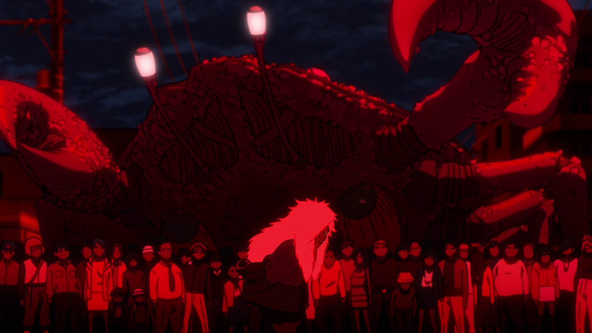
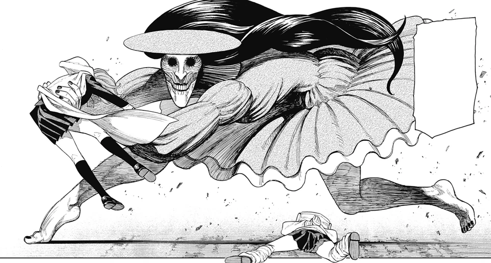
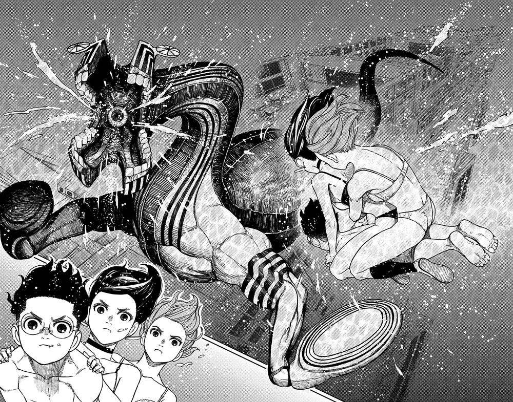

Momo Ayase and Okarun are on opposite sides of the paranormal spectrum regarding what they’ll believe in and what they won’t. Their quest to prove each other wrong leads them down a path of secret crushes and paranormal battles they’ll have to participate in to believe!
about
This wiki is dedicated to the manga series Dandadan (ダンダダン Dandadan?) written by Yukinobu Tatsu. This wiki for Dandadan is currently under construction, so feel free to help out. Please check our Community Page for more information. We recommend to sign up to create a FANDOM account, or log in if you already have one. Thank you for your contributions.
MomookarunSeikoTurbo GrannyAiraJijiEvil EyeKintaVamolaRinUnjiCount S. GermainKouki
Story Arc
Turbo Granny Arc

After a challenge to see whether aliens or spirits exist goes horribly wrong, Momo Ayase must help Ken Takakura (who she dubs as "Okarun") confront Turbo Granny in order to lift the curse the evil spirit has placed on him.
Acrobatic Silky Arc

Following their battle with the Turbo Granny, Momo and Okarun find themselves having to search for the latter's missing kintama after the Turbo Granny had stolen and lost them before her defeat. In the midst of their search, the two are confronted by another yokai known as Acrobatic Silky who is after Aira Shiratori, a girl from their school who is in possession of one of Okarun's kintama.
Serpo arc

Having taken an interest in the yokai powers demonstrated by the Turbo Granny in their first confrontation with her, the Serpo return to capture Okarun and extract the Turbo Granny's powers from him. Alongside Aira, Momo helps Okarun fight back against the aliens but is currently conflicted with him after an incident occurs prior to the Serpo's sudden arrival.
News
October 4,2024 - Dandadan (Anime) Season 1 has been released in Japan.
October 4, 2024 - Dandadan Volume 16 has been released in Japan.
July 4, 2024 - Dandadan Volume 15 has been released in Japan.
April 4, 2024 - Dandadan Volume 14 has been released in Japan.
January 4, 2024 - Dandadan Volume 13 has been released in Japan.
December 4, 2023 - Dandadan Volume 12 has been released in Japan.
November 27, 2023 - Launch of Dandadan (Anime) is announced for the year 2024
August 4, 2023 - Dandadan Volume 11 has been released in Japan.
May 2, 2023 - Dandadan Volume 10 has been released in Japan.
May 2, 2023 - Dandadan Volume 10 has been released in Japan.
May 2, 2023 - Dandadan Volume 10 has been released in Japan.
May 2, 2023 - Dandadan Volume 10 has been released in Japan.
May 2, 2023 - Dandadan Volume 10 has been released in Japan.
May 2, 2023 - Dandadan Volume 10 has been released in Japan.
May 2, 2023 - Dandadan Volume 10 has been released in Japan.
May 2, 2023 - Dandadan Volume 10 has been released in Japan.
May 2, 2023 - Dandadan Volume 10 has been released in Japan.